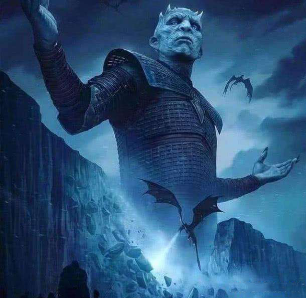

Winter is comming
Florin PopThe latest Game of Thrones recaps, season reviews, spoilers, episode rankings, podcasts and more. From Lannisters to Starks, we have you covered.
My Dog
A Night's Watch deserter is tracked down outside of Winterfell, prompting swift justice from Lord Eddard 'Ned' Stark, and raising concerns about the dangers in the lawless lands north of the Wall. Returning home, Ned learns from his wife Catelyn that his mentor, Jon Arryn, has died in the Westeros capital of King's Landing, and that King Robert is on his way north to offer Ned the position as the King's Hand. Meanwhile, across the Narrow Sea in Pentos, Viserys Targaryen hatches a plan to win back the throne by forging an allegiance with the nomadic Dothraki warriors by giving its leader, Khal Drogo, his lovely sister Daenerys's hand in marriage. Robert arrives at Winterfell with his wife, Queen Cersei, and other members of the Lannister family: her twin brother Jaime, dwarf brother Tyrion, and Cersei's son and heir to the throne, 12-year-old Joffrey. Unable to refuse his old friend and king, Ned prepares to leave for King's Landing, as Jon Snow decides to travel north to Castle Black to join the Night's Watch, accompanied by a curious Tyrion. But a startling act of treachery directed at young Bran may end up postponing their respective departures.